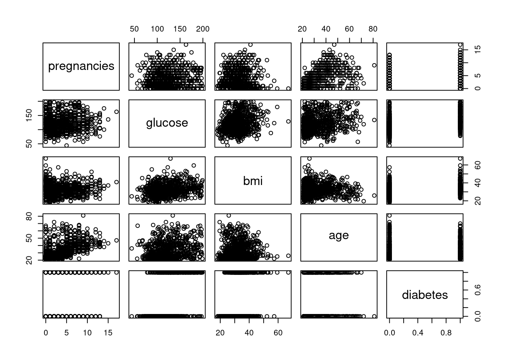
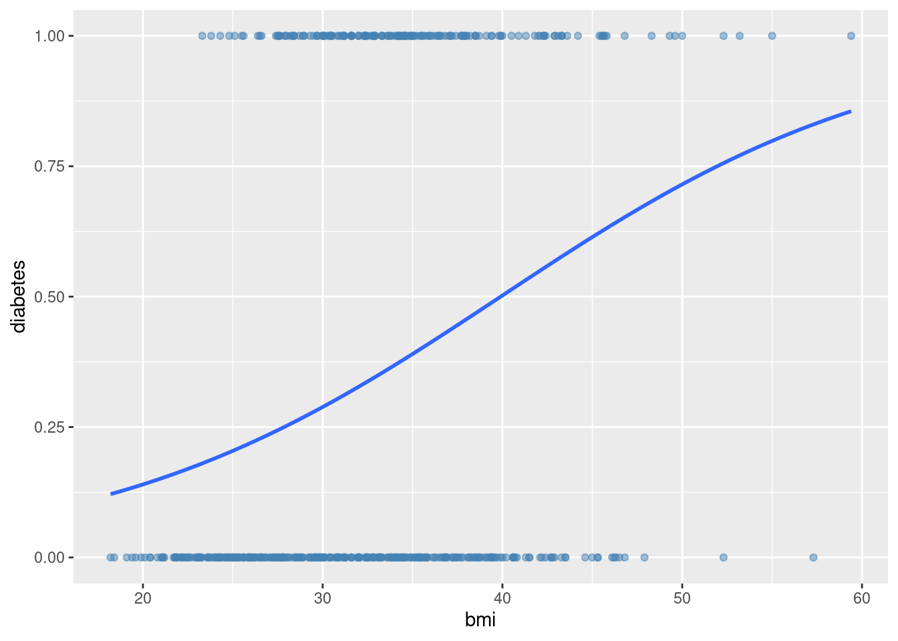

Code
library(tidyverse)
library(ggplot2)
library(dplyr)
library(magrittr)
knitr::opts_chunk$set(echo = TRUE)library(tidyverse)
library(ggplot2)
library(dplyr)
library(magrittr)
knitr::opts_chunk$set(echo = TRUE)According to the World Health Organization (WHO), an estimated 537 million people worldwide are living with diabetes. It is a leading cause of health complications and even death. The WHO states close to 1.5 million people died due to diabetes and its complication in 2019 alone. It is a growing problem that requires dedicated research to aim at the slowdown and prevention of future cases.
Research on Diabetes is ongoing and in-depth within the medical field. The prevalence and incidence of diabetes mellitus type 2 (DQ2) have increased consistently for decades, giving way to an increase in mortality related to diabetes. Commonly in the medical field, many risk factors are used to measure a patient’s risk of developing DM2, such as obesity, family history, hypertension and changes in fasting blood sugar levels. Moreno et al. (2018) studied risk parameters for diabetes and concluded “risk of being diabetic rises in patients whose father has suffered an acute myocardial infarction, in those whose mother or father is diabetic and in patients with a high waist perimeter.” Their focus on family history leaves room for studies more focused on individual medical factors, such as blood pressure, BMI, number of pregnancies, etc. That is the aim of this project.
M. L. M. V. J. A. (2018, June 11). Predictive risk model for the diagnosis of diabetes mellitus type 2 in a follow-up study 15 Years on: Prodi2 study. European journal of public health. Retrieved October 9, 2022, from https://pubmed.ncbi.nlm.nih.gov/29897477/
Other research, such as a Edlitz & Segal (2022) study titled Prediction of type 2 diabetes mellitus onset using logistic regression-based scorecards, does focus on using individual medical factors to predict risk of diabetes through regression. This project aims to conduct similar analysis on different data.
E. Y. S. E. (2022, June 22). Prediction of type 2 diabetes mellitus onset using logistic regression-based scorecards. eLife. Retrieved October 9, 2022, from https://pubmed.ncbi.nlm.nih.gov/35731045/
Body mass index (BMI), glucose, and age are positive predictors of diabetes mellitus type 2.
This hypothesis has been tested in the above mentioned studies. The contribution from this project will be the additional support for or against the hypotheses from the analysis of different data.
The data was collected by the “National Institute of Diabetes and Digestive and Kidney Diseases” as part of the Pima Indians Diabetes Database (PIDD). A total of 768 cases are available in PIDD. However, 5 patients had a glucose of 0 and 11 patients had a body mass index of 0. After cleaning the data by removing the cases with numbers that are incompatible with life in categories important to the current research, 752 cases remained. All patients belong to the Pima Indian heritage (subgroup of Native Americans), and are females aged 21 years and above.
The datasets consists of 9 medical predictor (independent) variables and one target (dependent) variable, outcome.
Pregnancies: Number of times a woman has been pregnant
Glucose: Plasma Glucose concentration of 2 hours in an oral glucose tolerance test
BloodPressure: Diastolic Blood Pressure (mm hg)
SkinThickness: Triceps skin fold thickness(mm)
Insulin: 2 hour serum insulin(mu U/ml)
BMI: Body Mass Index ((weight in kg/height in m)^2)
Age: Age(years)
DiabetesPedigreeFunction: scores likelihood of diabetes based on family history
Outcome: 0 (doesn’t have diabetes) or 1 (has diabetes)
df<- read_csv("_data/diabetes2.csv")Rows: 768 Columns: 9
── Column specification ────────────────────────────────────────────────────────
Delimiter: ","
dbl (9): Pregnancies, Glucose, BloodPressure, SkinThickness, Insulin, BMI, D...
ℹ Use `spec()` to retrieve the full column specification for this data.
ℹ Specify the column types or set `show_col_types = FALSE` to quiet this message.dim(df)[1] 768 9summary(df) Pregnancies Glucose BloodPressure SkinThickness
Min. : 0.000 Min. : 0.0 Min. : 0.00 Min. : 0.00
1st Qu.: 1.000 1st Qu.: 99.0 1st Qu.: 62.00 1st Qu.: 0.00
Median : 3.000 Median :117.0 Median : 72.00 Median :23.00
Mean : 3.845 Mean :120.9 Mean : 69.11 Mean :20.54
3rd Qu.: 6.000 3rd Qu.:140.2 3rd Qu.: 80.00 3rd Qu.:32.00
Max. :17.000 Max. :199.0 Max. :122.00 Max. :99.00
Insulin BMI DiabetesPedigreeFunction Age
Min. : 0.0 Min. : 0.00 Min. :0.0780 Min. :21.00
1st Qu.: 0.0 1st Qu.:27.30 1st Qu.:0.2437 1st Qu.:24.00
Median : 30.5 Median :32.00 Median :0.3725 Median :29.00
Mean : 79.8 Mean :31.99 Mean :0.4719 Mean :33.24
3rd Qu.:127.2 3rd Qu.:36.60 3rd Qu.:0.6262 3rd Qu.:41.00
Max. :846.0 Max. :67.10 Max. :2.4200 Max. :81.00
Outcome
Min. :0.000
1st Qu.:0.000
Median :0.000
Mean :0.349
3rd Qu.:1.000
Max. :1.000 head(df)# A tibble: 6 × 9
Pregnancies Glucose BloodPressure SkinTh…¹ Insulin BMI Diabe…² Age Outcome
<dbl> <dbl> <dbl> <dbl> <dbl> <dbl> <dbl> <dbl> <dbl>
1 6 148 72 35 0 33.6 0.627 50 1
2 1 85 66 29 0 26.6 0.351 31 0
3 8 183 64 0 0 23.3 0.672 32 1
4 1 89 66 23 94 28.1 0.167 21 0
5 0 137 40 35 168 43.1 2.29 33 1
6 5 116 74 0 0 25.6 0.201 30 0
# … with abbreviated variable names ¹SkinThickness, ²DiabetesPedigreeFunction#check for null entries
is.null(df)[1] FALSE#Check number of 0s in each column
colSums(df==0) Pregnancies Glucose BloodPressure
111 5 35
SkinThickness Insulin BMI
227 374 11
DiabetesPedigreeFunction Age Outcome
0 0 500 Glucose, blood pressure, skin thickness, insulin, BMI and Age are not variables that should logically have 0s. Those values, if true, are likely incompatible with life. To reduce the amount of data we exclude, we will only remove observations that have 0s for our explanatory variables. We will remove those cases from analysis.
#Remove rows with 0 in respective columns
df <- df[apply(df[c(2,6)],1,function(z) !any(z==0)),]
#Verify 0s are gone in selected rows
colSums(df==0) Pregnancies Glucose BloodPressure
108 0 28
SkinThickness Insulin BMI
218 360 0
DiabetesPedigreeFunction Age Outcome
0 0 488 #Check cleaned data frame
glimpse(df)Rows: 752
Columns: 9
$ Pregnancies <dbl> 6, 1, 8, 1, 0, 5, 3, 10, 2, 4, 10, 10, 1, 5, …
$ Glucose <dbl> 148, 85, 183, 89, 137, 116, 78, 115, 197, 110…
$ BloodPressure <dbl> 72, 66, 64, 66, 40, 74, 50, 0, 70, 92, 74, 80…
$ SkinThickness <dbl> 35, 29, 0, 23, 35, 0, 32, 0, 45, 0, 0, 0, 23,…
$ Insulin <dbl> 0, 0, 0, 94, 168, 0, 88, 0, 543, 0, 0, 0, 846…
$ BMI <dbl> 33.6, 26.6, 23.3, 28.1, 43.1, 25.6, 31.0, 35.…
$ DiabetesPedigreeFunction <dbl> 0.627, 0.351, 0.672, 0.167, 2.288, 0.201, 0.2…
$ Age <dbl> 50, 31, 32, 21, 33, 30, 26, 29, 53, 30, 34, 5…
$ Outcome <dbl> 1, 0, 1, 0, 1, 0, 1, 0, 1, 0, 1, 0, 1, 1, 1, …#Summarize df
summary(df) Pregnancies Glucose BloodPressure SkinThickness
Min. : 0.000 Min. : 44.00 Min. : 0.0 Min. : 0.00
1st Qu.: 1.000 1st Qu.: 99.75 1st Qu.: 64.0 1st Qu.: 0.00
Median : 3.000 Median :117.00 Median : 72.0 Median :23.00
Mean : 3.851 Mean :121.94 Mean : 69.7 Mean :20.72
3rd Qu.: 6.000 3rd Qu.:141.00 3rd Qu.: 80.0 3rd Qu.:32.00
Max. :17.000 Max. :199.00 Max. :122.0 Max. :99.00
Insulin BMI DiabetesPedigreeFunction Age
Min. : 0.00 Min. :18.20 Min. :0.0780 Min. :21.00
1st Qu.: 0.00 1st Qu.:27.50 1st Qu.:0.2440 1st Qu.:24.00
Median : 39.00 Median :32.30 Median :0.3770 Median :29.00
Mean : 81.35 Mean :32.45 Mean :0.4731 Mean :33.31
3rd Qu.:130.00 3rd Qu.:36.60 3rd Qu.:0.6275 3rd Qu.:41.00
Max. :846.00 Max. :67.10 Max. :2.4200 Max. :81.00
Outcome
Min. :0.0000
1st Qu.:0.0000
Median :0.0000
Mean :0.3511
3rd Qu.:1.0000
Max. :1.0000 At a glance, this summary is more fitting after having cleaned our data. An average of 3 pregnancies, considering our 21+ female population, makes sense. A mean glucose of 122, blood pressure of 70, a BMI of 33, and age of 33 are reasonably accurate for our population.
#Rename columns
colnames(df) <- c("pregnancies", "glucose", "bp", "skin_thickness", "insulin", "bmi", "dpf", "age", "diabetes")
dim(df)[1] 752 9We have 752 observations and 9 variables with which to work. The data is clean and ready for analysis.
Let’s get familiar with the data set by observing the scatterplot matrix and histograms for each variable.
#Scatterplot matrix
pairs(df)
#Histograms of each variable
hist.data.frame(df)Error in hist.data.frame(df): could not find function "hist.data.frame"The scatterplot matix shows that our variables generally lack linear relationships. Logistics regression may be best for analyzing this type of data.
The histograms show us the distribution of all our variables. Pregnancies is right skewed with more women having a smaller number of pregnancies and a small number having over 10. Glucose appears to follow a close-to-normal distribution with the mean just over 100. BMI follows a similar pattern with a central value of just over 30. Age is right skewed with the majority of the sample appearing to be in their 20s and slower tapering off to ages in their 50s. This is a good place to start. The only variable we cannot view in a histogram is the outcome variable due to its binary nature as a dummy variable.
bgap <- as.data.frame(df[, c(1,2,6,8,9)])
pairs(bgap)
#Plot outcome variable
ggplot(df, aes(x=factor(diabetes))) +
geom_bar(fill = "#0073C2FF")+
scale_x_discrete(labels=c('No Diabetes','Diabetes'))+
xlab("Outcome")
About a third of our sample have diabetes.
#Create training and test data
set.seed(1)
bgap %>%
nrow() %>%
multiply_by(0.7) %>%
round() -> training_set_size
train_indices <- sample(1:nrow(df), training_set_size)
train <- bgap[train_indices,]
test <- bgap[-train_indices,]
nrow(train)[1] 526nrow(test)[1] 226head(train) pregnancies glucose bmi age diabetes
679 7 129 38.5 43 1
129 8 84 38.3 39 0
509 3 124 33.2 26 0
471 0 123 35.2 29 0
299 2 120 39.7 29 0
270 7 106 26.5 29 1As a reminder, pregnancies, age, and BMI are all right skewed. So, we will use the logarithm of those variables in our regressions.
#Model 1 using all independent variables
all_var <- glm(diabetes ~ ., data = train, family = binomial)
#Model 2 using BMI, glucose, and age
bga <- glm(diabetes ~ . -pregnancies, data = train, family = binomial)
#Model 3 using BMI and glucose
bg <- glm(diabetes ~ .-age -pregnancies, data = train, family = binomial)
#Model 4 using BMI, glucose, age, and an interaction between pregnancies and age.
ia <- glm(diabetes ~ glucose + bmi + age*pregnancies, data = train, family = binomial)
#Model 5 with BMI, glucose, and pregnancies (without age)
bgp <- glm(diabetes ~ . -age, data = train, family = binomial)Our hypothesis involves the BMI, glucose, and age variables. First we can take a look at them individually.
#Generalized linear model can be best for predicting categorical outcome
#Regression model on BMI
mbmi <- glm(diabetes ~ bmi, data = train)
summary(mbmi)
Call:
glm(formula = diabetes ~ bmi, data = train)
Deviance Residuals:
Min 1Q Median 3Q Max
-0.8360 -0.3589 -0.2084 0.5492 0.8329
Coefficients:
Estimate Std. Error t value Pr(>|t|)
(Intercept) -0.291366 0.097381 -2.992 0.0029 **
bmi 0.019674 0.002933 6.707 5.15e-11 ***
---
Signif. codes: 0 '***' 0.001 '**' 0.01 '*' 0.05 '.' 0.1 ' ' 1
(Dispersion parameter for gaussian family taken to be 0.2097284)
Null deviance: 119.33 on 525 degrees of freedom
Residual deviance: 109.90 on 524 degrees of freedom
AIC: 675.14
Number of Fisher Scoring iterations: 2ggplot(data = train, aes(x =bmi, y = diabetes)) +
geom_point() +
geom_smooth(method = 'lm')`geom_smooth()` using formula = 'y ~ x'
Interpretation: The residuals are relatively small. The coefficient estimate suggests that for every 1 unit increase of BMI, the chance of diabetes increases 0.019. The standard errors are small. Our t-values are large compared to our standard error and relatively far from 0. All that, combined with a very small p-value of < 5.15e-11, indicate we can reject the null hypothesis and conclude a relationship between BMI and diabetes.
#Regression model on glucose
mgluc <- glm(diabetes ~ glucose, data = train)
summary(mgluc)
Call:
glm(formula = diabetes ~ glucose, data = train)
Deviance Residuals:
Min 1Q Median 3Q Max
-0.9139 -0.3098 -0.1210 0.3561 0.9847
Coefficients:
Estimate Std. Error t value Pr(>|t|)
(Intercept) -0.5736945 0.0759383 -7.555 1.88e-13 ***
glucose 0.0075512 0.0006039 12.503 < 2e-16 ***
---
Signif. codes: 0 '***' 0.001 '**' 0.01 '*' 0.05 '.' 0.1 ' ' 1
(Dispersion parameter for gaussian family taken to be 0.1754047)
Null deviance: 119.333 on 525 degrees of freedom
Residual deviance: 91.912 on 524 degrees of freedom
AIC: 581.13
Number of Fisher Scoring iterations: 2ggplot(data = train, aes(x = glucose, y = diabetes)) +
geom_point() +
geom_smooth(method = 'lm')`geom_smooth()` using formula = 'y ~ x'
Interpretation: Interestingly, the values of this regression mirror that of the BMI regression. With a very small p-value, < 2e-16, we can see that the plasma glucose concentrations of the 2 hour oral glucose tolerance test (GGT) are related to our outcome variable, diabetes. This makes sense as GGT is sometimes used as a diagnostic tool for diabetes.
The similarities is regression model values between BMI and glucose sparked a curiosity. Let’s see if BMI and glucose are specifically correlated to one another.
cor.test(train$bmi, train$glucose, method = "pearson")
Pearson's product-moment correlation
data: train$bmi and train$glucose
t = 5.8539, df = 524, p-value = 8.477e-09
alternative hypothesis: true correlation is not equal to 0
95 percent confidence interval:
0.1657727 0.3263371
sample estimates:
cor
0.2477554 This shows a very small p-value of 8.477e-09, which is well under the significance level alpha = 0.5. However, the correlation coefficient suggests a weak positive correlation. This suggests the variables are only weakly related.
Let’s continue with our regression model hypothesis testing of individual variables.
#Regression model on age
mage <- glm(diabetes ~ age, data = train)
summary(mage)
Call:
glm(formula = diabetes ~ age, data = train)
Deviance Residuals:
Min 1Q Median 3Q Max
-0.7495 -0.3120 -0.2531 0.5786 0.7553
Coefficients:
Estimate Std. Error t value Pr(>|t|)
(Intercept) 0.068046 0.060323 1.128 0.26
age 0.008413 0.001707 4.928 1.12e-06 ***
---
Signif. codes: 0 '***' 0.001 '**' 0.01 '*' 0.05 '.' 0.1 ' ' 1
(Dispersion parameter for gaussian family taken to be 0.2176469)
Null deviance: 119.33 on 525 degrees of freedom
Residual deviance: 114.05 on 524 degrees of freedom
AIC: 694.63
Number of Fisher Scoring iterations: 2ggplot(data = train, aes(x = age, y = diabetes)) +
geom_point() +
geom_smooth(method = 'lm')`geom_smooth()` using formula = 'y ~ x'Interpretation: Similar to the previous variable, age also has small residuals and standard error. It shows a p-value of 1.12e-06, indicating a relationship between age and diabetes.
The hypothesis that BMI, glucose tolerance results, and age are positively associated with diabetes is true. Next, we can investigate models that could help predict the outcome using these variables.
#Summarize model including BMI, glucose, age, and pregnancies
summary(all_var)
Call:
glm(formula = diabetes ~ ., family = binomial, data = train)
Deviance Residuals:
Min 1Q Median 3Q Max
-2.2423 -0.7382 -0.4133 0.7876 2.3714
Coefficients:
Estimate Std. Error z value Pr(>|z|)
(Intercept) -8.78253 0.86386 -10.167 < 2e-16 ***
pregnancies 0.12194 0.03801 3.208 0.00134 **
glucose 0.03583 0.00420 8.533 < 2e-16 ***
bmi 0.08150 0.01762 4.626 3.74e-06 ***
age 0.01328 0.01057 1.257 0.20877
---
Signif. codes: 0 '***' 0.001 '**' 0.01 '*' 0.05 '.' 0.1 ' ' 1
(Dispersion parameter for binomial family taken to be 1)
Null deviance: 679.74 on 525 degrees of freedom
Residual deviance: 507.97 on 521 degrees of freedom
AIC: 517.97
Number of Fisher Scoring iterations: 5We can see with the all variable model that collectively, independent variables including pregnancies, glucose, bmi, dpf and even blood pressure have low p-values. That suggests those variables have a relationship with the outcome variable. We can use AIC as an indicator of model fitness, with this model being 517.97. Let’s compare this with the following models.
#Summarize BMI, glucose, and age model
summary(bga)
Call:
glm(formula = diabetes ~ . - pregnancies, family = binomial,
data = train)
Deviance Residuals:
Min 1Q Median 3Q Max
-2.4041 -0.7545 -0.4352 0.7993 2.3643
Coefficients:
Estimate Std. Error z value Pr(>|z|)
(Intercept) -8.744037 0.852715 -10.254 < 2e-16 ***
glucose 0.035131 0.004137 8.492 < 2e-16 ***
bmi 0.079445 0.017191 4.621 3.82e-06 ***
age 0.031119 0.008956 3.474 0.000512 ***
---
Signif. codes: 0 '***' 0.001 '**' 0.01 '*' 0.05 '.' 0.1 ' ' 1
(Dispersion parameter for binomial family taken to be 1)
Null deviance: 679.74 on 525 degrees of freedom
Residual deviance: 518.60 on 522 degrees of freedom
AIC: 526.6
Number of Fisher Scoring iterations: 4ggplot(train, aes(x=age, y=bmi, color=glucose)) + geom_point() + facet_grid(~diabetes)The model looking at BMI, age, and glucose as explanatory variables for diabetes has an AIC of 526.6, which is a worse fit than the all variables model.
#Summarize BMI and glucose model
summary(bg)
Call:
glm(formula = diabetes ~ . - age - pregnancies, family = binomial,
data = train)
Deviance Residuals:
Min 1Q Median 3Q Max
-2.1839 -0.7780 -0.4709 0.7866 2.2925
Coefficients:
Estimate Std. Error z value Pr(>|z|)
(Intercept) -7.66078 0.76033 -10.076 < 2e-16 ***
glucose 0.03728 0.00412 9.049 < 2e-16 ***
bmi 0.07097 0.01677 4.231 2.32e-05 ***
---
Signif. codes: 0 '***' 0.001 '**' 0.01 '*' 0.05 '.' 0.1 ' ' 1
(Dispersion parameter for binomial family taken to be 1)
Null deviance: 679.74 on 525 degrees of freedom
Residual deviance: 530.80 on 523 degrees of freedom
AIC: 536.8
Number of Fisher Scoring iterations: 4ggplot(train, aes(x=glucose, y=bmi, color=diabetes)) + geom_point() + facet_grid(~diabetes)This BMI and glucose only model has a worse (higher) AIC, with 536.8, than the 2 previous models. So far, the all variable model appears the best fit.
#Summarize model including interaction between age and pregnancies
#This was chosen to see if the impact of age on diabetes is different depending on the number of pregnancies
summary(ia)
Call:
glm(formula = diabetes ~ glucose + bmi + age * pregnancies, family = binomial,
data = train)
Deviance Residuals:
Min 1Q Median 3Q Max
-2.4728 -0.6818 -0.4072 0.7648 2.3441
Coefficients:
Estimate Std. Error z value Pr(>|z|)
(Intercept) -10.231410 1.028027 -9.952 < 2e-16 ***
glucose 0.035779 0.004238 8.442 < 2e-16 ***
bmi 0.084510 0.017867 4.730 2.25e-06 ***
age 0.053813 0.016978 3.170 0.00153 **
pregnancies 0.505863 0.134568 3.759 0.00017 ***
age:pregnancies -0.009962 0.003337 -2.985 0.00283 **
---
Signif. codes: 0 '***' 0.001 '**' 0.01 '*' 0.05 '.' 0.1 ' ' 1
(Dispersion parameter for binomial family taken to be 1)
Null deviance: 679.74 on 525 degrees of freedom
Residual deviance: 498.41 on 520 degrees of freedom
AIC: 510.41
Number of Fisher Scoring iterations: 5ggplot(train, aes(x=age, y=bmi, color=pregnancies)) + geom_point() + facet_grid(~diabetes)
With an AIC of 510.41, this model appears to be the best fit model of those we have compared. This indicated there is an interaction between age and pregnancies that has a relationship with the outcome variable.
#Summarize model including without age
summary(bgp)
Call:
glm(formula = diabetes ~ . - age, family = binomial, data = train)
Deviance Residuals:
Min 1Q Median 3Q Max
-2.2180 -0.7390 -0.4176 0.7806 2.3503
Coefficients:
Estimate Std. Error z value Pr(>|z|)
(Intercept) -8.454908 0.814921 -10.375 < 2e-16 ***
pregnancies 0.147046 0.032598 4.511 6.46e-06 ***
glucose 0.036658 0.004169 8.794 < 2e-16 ***
bmi 0.079282 0.017533 4.522 6.13e-06 ***
---
Signif. codes: 0 '***' 0.001 '**' 0.01 '*' 0.05 '.' 0.1 ' ' 1
(Dispersion parameter for binomial family taken to be 1)
Null deviance: 679.74 on 525 degrees of freedom
Residual deviance: 509.54 on 522 degrees of freedom
AIC: 517.54
Number of Fisher Scoring iterations: 4ggplot(train, aes(x=pregnancies, y=bmi, color=glucose)) + geom_point() + facet_grid(~diabetes)
Removing age entirely increased the AIC of this model. So, the interaction model seems to be the best fit. That is, model 4 which includes BMI and glucose and controls for an interaction between age and pregnancy has the best fit of all models tested.
We can use ANOVA to analyze the table of deviance of our regression model.
#ANOVA test on interaction model 4
anova(ia, test = "Chisq")Analysis of Deviance Table
Model: binomial, link: logit
Response: diabetes
Terms added sequentially (first to last)
Df Deviance Resid. Df Resid. Dev Pr(>Chi)
NULL 525 679.74
glucose 1 130.061 524 549.68 < 2.2e-16 ***
bmi 1 18.883 523 530.80 1.39e-05 ***
age 1 12.197 522 518.60 0.0004786 ***
pregnancies 1 10.635 521 507.97 0.0011098 **
age:pregnancies 1 9.554 520 498.41 0.0019950 **
---
Signif. codes: 0 '***' 0.001 '**' 0.01 '*' 0.05 '.' 0.1 ' ' 1All of our variables have small p-values and appear good predictors of the diabetes outcome, with the exception of age. However, age is needed for the interaction variable.
Let’s check one more thing to ensure we have a good fit.
#Check pseudo R2 for interaction model
pR2(ia)Error in pR2(ia): could not find function "pR2"With a McFadden R-squared of 0.27, model 4 can be considered an excellent fit.
To test the model, the next step is to apply it to the test subset of data.
#Apply model to test data
fitted.results <- predict(ia ,test,type='response')
fitted.results <- ifelse(fitted.results > 0.5,1,0)
pred <- mean(fitted.results != test$diabetes)
output <- cbind(test, fitted.results)
print(paste('Accuracy',1-pred))[1] "Accuracy 0.787610619469027"head(output) pregnancies glucose bmi age diabetes fitted.results
9 2 197 30.5 53 1 1
10 4 110 37.6 30 0 0
12 10 139 27.1 57 0 0
13 1 189 30.1 59 1 1
14 5 166 25.8 51 1 1
17 7 107 29.6 31 1 0Testing the interaction model on the test data produces the correct outcome 79% of the time.
#Diagnostic plot of model
plot(ia)Residuals vs Fitted: The residuals have 2 distinct patterns of behavior. They start at close to 0 and taper off to a negative slope. Another group of residuals starts large and tapers on a negative slope toward 0.
Normal Q-Q: The Q-Q plot, which indicates level of asymmetry, tells us our data is not a normal distribution. It appears to have a right tail (see the points drifting from the line at the top), which aligns with our individual variable histogram interpretations. It follows that a model combining variables with right skews may also be skewed to the right. However, it also has values away from the line on the bottom left, away from the intercept. This suggests our model also includes a left tail. This distribution seems to have “fat tails.”
Scale-Location: This plots the fitted values of the model along the x-axis and the square root of the standardized residuals along the y-axis. The red line does roughly travel horizontal across the plot. However, there is a clear X pattern among residuals. This suggests our model has heteroscedasticity, which is not ideal.
Residuals vs Leverage: The points on this graph all fall within Cook’s distance, indicating there are not any influential points in our regression model.
Plan to work on fixing the heteroscedasticity by log transforming BMI, pregnancies, and age when those variables are included in models because they are right skewed data. However, it is taking time figuring out how to do a multiple logistics regression without errors..